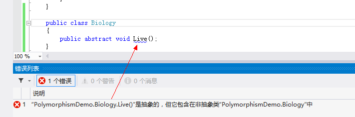

C# 多态性
ポリモーフィズムとは、同じ動作が複数の異なる表現形式や形態を持つ能力です。
多态性複数の形式を持つことを意味します。オブジェクト指向プログラミングのパラダイムでは、ポリモーフィズムはしばしば「1つのインターフェース、複数の機能」として現れます。
ポリモーフィズムには静的または動的なものがあります。静态多态性では、関数の応答はコンパイル時に発生します。动态多态性中で、関数の応答は実行時に発生します。
C# では、すべての型がポリモーフィックです。ユーザー定義型を含むすべての型が Object を継承するためです。
ポリモーフィズムとは、同じインターフェースでも、異なるインスタンスを使用すると異なる操作を実行することです。図に示すように：

現実の例として、F1 キーを押すという動作を考えてみましょう。
- 現在Flashインターフェースの下でポップアップするのはAS 3のヘルプドキュメントです；
- 現在Wordの下でポップアップするのはWordヘルプです；
- Windowsの下でポップアップするのはWindowsヘルプとサポートです。
同じイベントが異なるオブジェクトで発生すると、異なる結果が生じます。
静态多态性
コンパイル時における関数とオブジェクトの結び付けの仕組みは、アーリーバインディング（静的バインディング）と呼ばれます。C# では、静的ポリモーフィズムを実現するために2つの技術が提供されています。それは次のとおりです。
- 函数重载
- 运算符重载
演算子のオーバーロードは次の章で説明します。ここでは関数のオーバーロードについて説明します。
函数重载
同じスコープ内で、同じ関数名に対して複数の定義を持つことができます。関数の定義は互いに異なる必要があり、パラメータリストのパラメータ型が異なるか、パラメータの数が異なる必要があります。オーバーロードで戻り値の型だけが異なる関数宣言はできません。
以下のインスタンスはいくつかの同じ関数をデモンストレーションしますAdd()、異なる個数のパラメータを加算処理するために使用されます：
实例
namespace PolymorphismApplication
{
public class TestData
{
public int Add(int a, int b, int c)
{
return a + b + c;
}
public int Add(int a, int b)
{
return a + b;
}
}
class Program
{
static void Main(string[] args)
{
TestData dataClass = new TestData();
int add1 = dataClass.Add(1, 2);
int add2 = dataClass.Add(1, 2, 3);
Console.WriteLine("add1 :" + add1);
Console.WriteLine("add2 :" + add2);
}
}
}
以下のインスタンスはいくつかの同じ関数をデモンストレーションしますprint()、異なるデータ型を出力するために使用されます：
实例
namespace PolymorphismApplication
{
class Printdata
{
void print(int i)
{
Console.WriteLine("输出整型: {0}", i );
}
void print(double f)
{
Console.WriteLine("输出浮点型: {0}" , f);
}
void print(string s)
{
Console.WriteLine("输出字符串: {0}", s);
}
static void Main(string[] args)
{
Printdata p = new Printdata();
// 调用 print 来打印整数
p.print(1);
// 调用 print 来打印浮点数
p.print(1.23);
// 调用 print 来打印字符串
p.print("Hello Runoob");
Console.ReadKey();
}
}
}
上記のコードがコンパイルおよび実行されると、次の結果が生成されます：
输出整型: 1 输出浮点型: 1.23 输出字符串: Hello Runoob
动态多态性
C# では、キーワードを使用できますabstract抽象クラスを作成すると、インターフェースの一部のクラス実装を提供できます。派生クラスがこの抽象クラスを継承すると、実装が完了します。抽象类抽象メソッドが含まれており、抽象メソッドは派生クラスで実装できます。派生クラスはより専門的な機能を持ちます。
注意してください。以下は抽象クラスに関するいくつかの規則です。
- 抽象クラスのインスタンスを作成することはできません。
- 抽象クラスの外部で抽象メソッドを宣言することはできません。
- クラス定義の前にキーワードを置くことでsealed、クラスを～として宣言できます密封类。クラスが宣言されるとsealed場合、それは継承できません。抽象クラスは sealed として宣言できません。
以下のプログラムは、抽象クラスの例を示しています：
实例
namespace PolymorphismApplication
{
abstract class Shape
{
abstract public int area();
}
class Rectangle: Shape
{
private int length;
private int width;
public Rectangle( int a=0, int b=0)
{
length = a;
width = b;
}
public override int area ()
{
Console.WriteLine("Rectangle 类的面积：");
return (width * length);
}
}
class RectangleTester
{
static void Main(string[] args)
{
Rectangle r = new Rectangle(10, 7);
double a = r.area();
Console.WriteLine("面积： {0}",a);
Console.ReadKey();
}
}
}
上記のコードがコンパイルおよび実行されると、次の結果が生成されます：
Rectangle 类的面积： 面积： 70
クラス内で定義された関数を継承クラスで実装する必要がある場合、使用できるのは虚方法。
仮想メソッドはキーワードを使用しますvirtual声明的。
仮想メソッドは、異なる継承クラスで異なる実装を持つことができます。
仮想メソッドの呼び出しは実行時に発生します。
動的多態性は抽象类 和 虚方法实现的。
次の例では、Shape 基底クラスを作成し、派生クラス Circle、Rectangle、Triangle を作成します。Shape クラスには Draw という仮想メソッドがあり、各派生クラスでこのメソッドをオーバーライドして、そのクラスで指定された図形を描画します。
实例
using System.Collections.Generic;
public class Shape
{
public int X { get; private set; }
public int Y { get; private set; }
public int Height { get; set; }
public int Width { get; set; }
// 虚方法
public virtual void Draw()
{
Console.WriteLine("执行基类的画图任务");
}
}
class Circle : Shape
{
public override void Draw()
{
Console.WriteLine("画一个圆形");
base.Draw();
}
}
class Rectangle : Shape
{
public override void Draw()
{
Console.WriteLine("画一个长方形");
base.Draw();
}
}
class Triangle : Shape
{
public override void Draw()
{
Console.WriteLine("画一个三角形");
base.Draw();
}
}
class Program
{
static void Main(string[] args)
{
// 创建一个 List<Shape> 对象，并向该对象添加 Circle、Triangle 和 Rectangle
var shapes = new List<Shape>
{
new Rectangle(),
new Triangle(),
new Circle()
};
// 使用 foreach 循环对该列表的派生类进行循环访问，并对其中的每个 Shape 对象调用 Draw 方法
foreach (var shape in shapes)
{
shape.Draw();
}
Console.WriteLine("按下任意键退出。");
Console.ReadKey();
}
}
上記のコードがコンパイルおよび実行されると、次の結果が生成されます：
長方形を描く 基本クラスの描画タスクを実行する 三角形を描く 基本クラスの描画タスクを実行する 円を描く 基本クラスの描画タスクを実行する 任意のキーを押して終了します。
次のプログラムは、仮想メソッド area() を使用して異なる形状の図形の面積を計算する例です。
实例
namespace PolymorphismApplication
{
class Shape
{
protected int width, height;
public Shape( int a=0, int b=0)
{
width = a;
height = b;
}
public virtual int area()
{
Console.WriteLine("父类的面积：");
return 0;
}
}
class Rectangle: Shape
{
public Rectangle( int a=0, int b=0): base(a, b)
{
}
public override int area ()
{
Console.WriteLine("Rectangle 类的面积：");
return (width * height);
}
}
class Triangle: Shape
{
public Triangle(int a = 0, int b = 0): base(a, b)
{
}
public override int area()
{
Console.WriteLine("Triangle 类的面积：");
return (width * height / 2);
}
}
class Caller
{
public void CallArea(Shape sh)
{
int a;
a = sh.area();
Console.WriteLine("面积： {0}", a);
}
}
class Tester
{
static void Main(string[] args)
{
Caller c = new Caller();
Rectangle r = new Rectangle(10, 7);
Triangle t = new Triangle(10, 5);
c.CallArea(r);
c.CallArea(t);
Console.ReadKey();
}
}
}
上記のコードがコンパイルおよび実行されると、次の結果が生成されます：
Rectangle 类的面积： 面积：70 Triangle 类的面积： 面积：25其他扩展
yuri
246***6318@qq.com
C# 多態性
多态：1つのインターフェースで複数の機能。
静的ポリモーフィズム：コンパイル時に関数の応答（呼び出し）が発生します；
動的ポリモーフィズム：実行時に関数応答が発生します。
静的バインディング（早期バインディング）：コンパイル時における関数とオブジェクトの結び付けの仕組み。 静的ポリモーフィズムを実現する2つの技術：関数オーバーロード / 演算子オーバーロード。
函数重载：同じスコープ内で同じ関数名に対して複数の定義を持つことができ、パラメータの型またはパラメータの数が異なる場合に限ります。ただし、戻り値の型だけが異なることは許可されません。
演算子オーバーロード：
キーワード abstract は抽象クラスを宣言します：インターフェースの一部のクラス実装に使用します（派生クラスが抽象クラスを継承すると実装が完了します）。抽象クラスには抽象メソッドが含まれ、抽象メソッドは派生クラスで実装できます。
抽象クラスのルール：
キーワード virtual は仮想メソッドを宣言します：継承クラスでのメソッドの実装に使用します（異なる継承クラスで異なる実装を持ちます）。
抽象クラスと仮想メソッドは、動的ポリモーフィズムを共同で実現します。
注：継承クラスで仮想関数をオーバーライドするにはキーワード override を宣言する必要があります。メソッドのパラメータ渡しでは（クラス名 仮引数名）と書きます。例：public void CallArea(Shape sh)。これは shape 型のクラスを渡すことを意味します。
yuri
246***6318@qq.com
p
roz***ech@gmail.com
virtual 和 abstract
virtual と abstract はどちらも親クラスを修飾するために使われ、親クラスの定義をオーバーライドすることで、子クラスが再定義できるようにします。
重载和重写
オーバーロード (overload) は、同じ関数名を異なる戻り値の型やパラメータによって区別するためのメカニズムを提供します。
オーバーライド (override) は、基本クラスの仮想メソッドを再定義するために使用され、派生クラスで新しいメソッドを提供します。
p
roz***ech@gmail.com
zeng123m
705***981@qq.com
参考地址
抽象メソッドと仮想メソッドの違い
簡単に言うと、抽象メソッドは子クラスが実装する必要があります。仮想メソッドはすでに実装されており、子クラスでオーバーライドすることもできますし、オーバーライドしないこともできます。それは要件によって異なります。
抽象メソッドと仮想メソッドはどちらも派生クラスでオーバーライドできます。
zeng123m
705***981@qq.com
参考地址
Lost丶先生
102***8263@qq.com
参考地址
1、重载(overload): 同じスコープ（通常は1つのクラス）内で、2つ以上のメソッドが同じ関数名を持ち、パラメータリストが異なるものをオーバーロードと呼びます。これには3つの特徴があります（通称「2つの必須、1つの許可」）：
例如：
public void Sleep() { Console.WriteLine("Animal睡觉"); } public int Sleep(int time) { Console.WriteLine("Animal{0}点睡觉", time); return time; }2、重写(override): 子クラスが自分のニーズを満たすために、あるメソッドの異なる実装を再定義するには、override キーワードを使用する必要があります。オーバーライドされるメソッドは仮想メソッドである必要があり、virtual キーワードを使用します。その特徴は（3つの同じ）：
例：親クラスの定義：
public virtual void EatFood() { Console.WriteLine("Animal吃东西"); }子クラスの定義：
public override void EatFood() { Console.WriteLine("Cat吃东西"); //base.EatFood(); }3、虚方法：基本クラスで定義され、派生クラスでオーバーライドできるメソッドのことです。virtual キーワードを使用して定義します。例：
public virtual void EatFood() { Console.WriteLine("Animal吃东西"); }注意：仮想メソッドは直接呼び出すこともできます。例：
実行出力結果：
4、抽象方法：基本クラスで定義され、派生クラスでオーバーライドしなければならないメソッドです。使用するのはabstractキーワード定義。例：
public abstract class Biology { public abstract void Live(); } public class Animal : Biology { public override void Live() { Console.WriteLine("Animal重写的抽象方法"); //throw new NotImplementedException(); } }注意：抽象メソッドは抽象クラスの中でのみ定義できます。抽象クラス以外で定義すると、次のようなエラーが発生します。

5、隐藏方法：派生クラスで定義され、基本クラスの特定のメソッドと同じ名前を持つメソッドです。new キーワードを使用して定義します。例えば、基本クラス Animal にメソッド Sleep() があるとします。
public void Sleep() { Console.WriteLine("Animal Sleep"); }その場合、派生クラス Cat で隠蔽メソッドを定義するコードは次のようになります。
new public void Sleep() { Console.WriteLine("Cat Sleep"); }或者为：
public new void Sleep() { Console.WriteLine("Cat Sleep"); }注意：
Lost丶先生
102***8263@qq.com
参考地址
Marco
329***308@qq.com
仮想メソッドの呼び出し：呼び出しに関して、子クラスで生成されたオブジェクトを使用して仮想メソッドを呼び出すと子クラスのメソッドが呼び出され、親クラスで生成されたオブジェクトを使用すると親クラスのメソッドが呼び出されます。
隠しメソッドの呼び出し：呼び出しに関して、子クラス型の宣言を使用して隠蔽メソッドを呼び出すと、子クラスのメソッドが呼び出されます。隠蔽されたメソッドを呼び出したい場合は、親クラス型の宣言を使用して呼び出す必要があります。
呼び出しが異なる例：
class Enemy { public void Move() { Console.WriteLine("调用了 enemy的move方法"); } public virtual void Attack() { Console.WriteLine("enemy attac"); } } class Boss : Enemy { public override void Attack() { Console.WriteLine("Boss Attac"); } public new void Move() { Console.WriteLine("Boss move"); } } static void Main(string[] args) { //---- 隐藏方法的调用----begin Boss oneEnemy = new Boss(); oneEnemy.Move(); // 调用的是隐藏方法， 用子类的声明来调用的，调用的就是子类的Move。 Enemy twoEnemy = new Boss(); twoEnemy.Move(); // 调用的隐藏方法， 用父类的声明来调用的，调用的就是父类的Move方法。 //-----------------------end //-----虚方法的调用----- begin 用什么类型 来构造，在调用方法的时候就会调用什么类型的方法。 Enemy threeEnemy = new Enemy(); threeEnemy.Attac(); // 调用虚方法，用父类来实例化的，所以调用的是父类的Attac方法。 Enemy fourEnemy = new Boss(); fourEnemy.Attac(); // 调用虚方法，用子类来实例化的，所以调用的就是子类(Boss)的Attac方法。 //-----虚方法的调用------end Console.ReadKey(); }Marco
329***308@qq.com
lanya13
har***323@126.com
原文の抽象クラスの例は実際にはポリモーフィズムを体现していません。継承クラス（三角形の面積）を追加することで、ポリモーフィズムを体现できます。
using System; namespace PolymorphismApplication { abstract class Shape { public abstract int area(); } class Rectangle : Shape { private int length; private int width; public Rectangle(int a = 0, int b = 0) { length = a; width = b; } public override int area() { //Console.WriteLine("Rectangle 类的面积："); return (width * length); } } class triangle : Shape { private int baseLine; private int height; public triangle(int a = 0, int b = 0) { baseLine = a; height = b; } public override int area() { //Console.WriteLine("三角形类的面积："); return (2 *baseLine* height/4); } } class RectangleTester { static void Main(string[] args) { Rectangle r = new Rectangle(10, 7); double a = r.area(); triangle t = new triangle(10, 7); double b = t.area(); Console.WriteLine("长方形面积： {0}, 三角形面积：{1}", a, b); Console.ReadKey(); } } }lanya13
har***323@126.com
维乐紫刃
vrb***lor@126.com
自分で継承を書き、隠蔽メソッドとオーバーライドメソッドをそれぞれ書き、3つのインスタンスを生成して説明してみます。
namespace MySpace { class dad { protected string name; public dad(string n) { name = n; } public void say() { Console.WriteLine("I am {0}.", name); } public virtual void growup() { Console.WriteLine("{0} has grown old.", name); } } class son:dad { public son(string n) : base(n) { //name = n; } public new void say() { Console.WriteLine("I am {0} and a son.",name); } public override void growup() { //base.growup(); Console.WriteLine("{0} is growing up.",name); } } class entrance { public static void Main() { dad grandpa = new dad("grandpa"); grandpa.say(); grandpa.growup(); dad father = new son("father"); father.say(); father.growup(); son tom = new son("Tom"); tom.say(); tom.growup(); Console.ReadKey(); } } }実行結果：
上記の結果：
维乐紫刃
vrb***lor@126.com
谷岳添
hoo***ni@qq.com
これが本当のポリモーフィズムです：
using System; class Animal { public virtual void Eat() { Console.WriteLine("这是animal的eat方法"); } } class Dog:Animal { public override void Eat() { Console.WriteLine("这是dog的eat"); } } class Cat : Animal { public override void Eat() { Console.WriteLine("这是cat的eat"); } } class Program { static void Main(string[] args) { // 多态的实现前提是继承和方法重写，基类可以new所有的派生类 new哪个类，他就执行那个类的方法 Animal animal1 = new Animal(); // 实例Animal类 Animal animal2 = new Dog(); // 实例Dog类 Animal animal3 = new Cat(); // 实例Cat类 animal1.Eat(); // 调用Animal类的eat方法 animal2.Eat(); // 实例Dog类 animal3.Eat(); // 实例Cat类 } }谷岳添
hoo***ni@qq.com
大聪明学府
253***6969@qq.com
関数オーバーロードの簡単な例：
using System; namespace Emmmm { public class Discern { public static void DiscernTypeof(int a) { Console.WriteLine("{0} is int.", a); } public static void DiscernTypeof(string a) { Console.WriteLine("\"{0}\" is string.", a); } public static void DiscernTypeof(char a) { Console.WriteLine("{0} is char.", a); } public static void DiscernTypeof(float a) { Console.WriteLine("{0} is float.", a); } public static void DiscernTypeof(double a) { Console.WriteLine("{0} is double.", a); } public static void DiscernTypeof(bool a) { Console.WriteLine("{0} is boolean.", a); } public static void DiscernTypeof(long a) { Console.WriteLine("{0} is long.", a); } } class Program { static void Main(string[] args) { Discern.DiscernTypeof(233); Discern.DiscernTypeof("aaa"); Discern.DiscernTypeof('c'); Discern.DiscernTypeof(233.233F); Discern.DiscernTypeof(23456277824367496L); Discern.DiscernTypeof(233.43285679368574D); Discern.DiscernTypeof(false); } } }结果：
大聪明学府
253***6969@qq.com
苏
sus***09643@outlook.com
参考地址
抽象クラス、抽象メソッド、仮想メソッドはすべてオブジェクト指向プログラミングにおける重要な概念であり、ポリモーフィズムと継承を実現するために使用されます。
抽象クラスと抽象メソッドは、次のような場面に適しています：
仮想メソッドは、以下のシナリオに適用されます：
overridevirtual キーワードを使用して基本クラスの仮想メソッドをオーバーライドし、独自のロジックを実装できます。総じて、抽象クラスと抽象メソッドはクラスの継承構造やメソッドの実装を制約・規範化するのに適しており、仮想メソッドはデフォルトの実装を提供し、子クラスにオーバーライドさせる場面に適しています。
抽象クラスでは、抽象メソッド以外にも、次のメンバーを抽象メンバーとして宣言できます：
抽象プロパティ（abstract properties）：抽象メソッドと同様に、実装本体を持たず、宣言のみがあり、具体的な子クラスで実装する必要があります。
抽象イベント（abstract events）：抽象メソッドやプロパティと同様に、具体的な子クラスで実装する必要があります。
抽象インデクサー（abstract indexers）：抽象プロパティと同様に、実装本体を持たず、宣言のみがあり、具体的な子クラスで実装する必要があります。
仮想メソッド以外にも、クラスには次のような仮想メンバーを持つことができます：
虚属性（Virtual Properties）：使用
virtualvirtual キーワードで定義されたプロパティは、子クラスでオーバーライドできます。仮想インデクサー（Virtual Indexers）：使用
virtualvirtual キーワードで定義されたインデクサーは、子クラスでオーバーライドできます。仮想イベント（Virtual Events）：使用
virtualvirtual キーワードで定義されたイベントは、子クラスでオーバーライドできます。仮想メンバーの役割は仮想メソッドと似ており、派生クラスでオーバーライドしてさまざまなニーズに応えることができます。同時に、仮想メンバーはコードの再利用性と拡張性も向上させることができます。
——ChatGPT
苏
sus***09643@outlook.com
参考地址